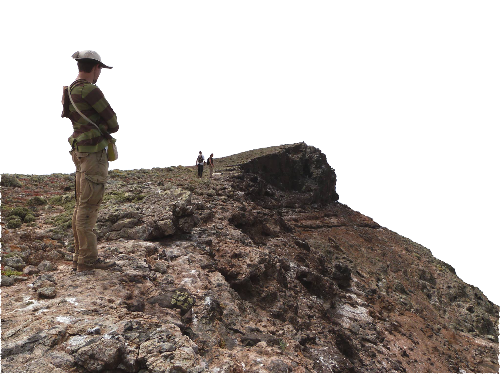

Ocean

With Henk-Jan Hoving and the Deep sea ecology group in GEOMAR and Rui Rosa at MARE, I am modelling the distribution of Cephalopods (squids, octopus and co.) now and in the future.
In the last sixty years, cephalopod species populations have increased in abundance regionally and have recently expanded their range poleward. These population changes are thought to result from the adaptative capacity and phenotypic plasticity of cephalopods to cope with environmental change. I am trying to understand the impacts that climate change will bring to the distribution of cephalopods throughout the World's Ocean, and possible consequences in the predators that depend on them.